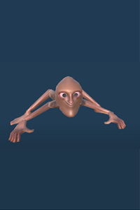

Upscream
Upscream es un monstruo de nivel 2 que se asemeja a una cabeza humana con cuatro brazos en lugar de piernas. Corretea por el nivel y, al ver a un jugador, se dirige hacia él. Al alcanzarlo, lo agarra, le inflige 10 de daño y lo lanza lejos, dejándolo aturdido durante unos segundos. Si un jugador no logra levantarse lo suficientemente rápido, un Grito Inferior puede atraparlo de nuevo, lo que podría aturdirlo. Suelen huir tras atrapar a un jugador tres veces.
Upscream puede dañar al jugador incluso si se esconde bajo muebles bajos, como una cama o una silla, subiendo por encima del lugar donde te vio. Si el jugador, escondido bajo muebles bajos, se mueve de su posición inicial después de que Upscream lo haya visto, no le causará daño.
Características
-
Nivel
2
-
Salud
50
-
Daño
10
-
Detección
Línea de visión
-
Punto de quiebre de fuerza
4
-
Punto de quiebre de fuerza (aturdido)
0
-
Hablilidad
Agarrará y arrojará al jugador, lo que le provocará daño físico.
-
Ataca a jugadores agachados
Es capaz de encajar debajo de ciertos objetos.
-
Valor del orbe
$2k - $4k
Consejos
Mantén la distancia si detectas a alguno: los gritos pueden ser especialmente peligrosos cerca de pozos u otros enemigos.
Pueden ser aturdidos por cualquier objeto de valor, independientemente de su tamaño, lo que hace que sea fácil matarlos si quedan aturdidos.
Si dos o más jugadores agarran uno, pueden levantarlo y golpearlo repetidamente para matarlo.
Los Upscreams pueden saltar y trepar sobre ciertos objetos, como mesas y sillas. Esconderse sobre ellos no garantiza su seguridad.
Los jugadores pueden saltar y dar volteretas sobre el Grito para esquivarlo. Esto también puede hacer que el Grito pierda la línea de visión, eliminando cualquier agresividad contra el jugador.